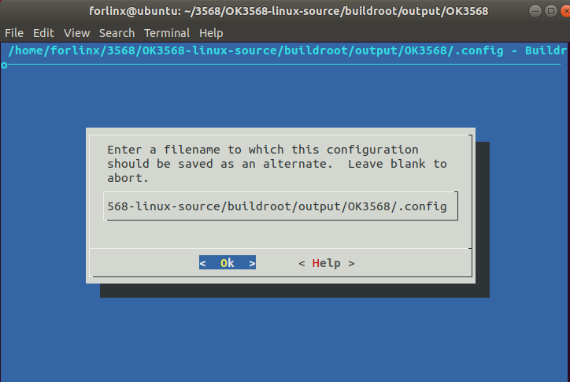

OK3568 4.19.206 Buildroot Not Effective After Menuconfig Configuration
Document classification: □ Top secret □ Secret □ Internal information ■ Open
Copyright
The copyright of this manual belongs to Baoding Folinx Embedded Technology Co., Ltd. Without the written permission of our company, no organizations or individuals have the right to copy, distribute, or reproduce any part of this manual in any form, and violators will be held legally responsible.
Forlinx adheres to copyrights of all graphics and texts used in all publications in original or license-free forms.
The drivers and utilities used for the components are subject to the copyrights of the respective manufacturers. The license conditions of the respective manufacturer are to be adhered to. Related license expenses for the operating system and applications should be calculated/declared separately by the related party or its representatives.
After executing the command, select No.95 and press Enter.
forlinx@ubuntu:~/3568/OK3568-linux-source$ source buildroot/build/envsetup.sh
Top of tree: /home/forlinx/3568/OK3568-linux-source
You're building on Linux
Lunch menu...pick a combo:
0. non-rockchip boards
1. acmesystems_aria_g25_128mb
2. acmesystems_aria_g25_256mb
......
......
91. nitrogen6sx
92. nitrogen6x
93. nitrogen7
94. odroidc2
95. OK3568
96. OK3568-recovery
97. olimex_a13_olinuxino
......
......
297. zynq_zed
298. zynq_zybo
Which would you like? [0]: 95 //Press Enter
#
make: Leaving directory '/home/forlinx/3568/OK3568-linux-source/buildroot'
2879c2879
< BR2_PACKAGE_IFENSLAVE=y
---
> # BR2_PACKAGE_IFENSLAVE is not set
3201c3201
< BR2_PACKAGE_ANDROID_TOOLS_ADB=y
---
> # BR2_PACKAGE_ANDROID_TOOLS_ADB is not set
Found old config, override it? (y/n):forlinx@ubuntu:~/3568/OK3568-linux-source$
After configuring the menuconfig you need, select no when compiling the file system again.
forlinx@ubuntu:~/3568/OK3568-linux-source$ cd buildroot/output/OK3568
forlinx@ubuntu:~/3568/OK3568-linux-source/buildroot/output/OK3568$ make menuconfig //Configure buildroot
umask 0022 && make -C /home/forlinx/3568/OK3568-linux-source/buildroot O=/home/forlinx/3568/OK3568-linux-source/buildroot/output/OK3568/. menuconfig
GEN /home/forlinx/3568/OK3568-linux-source/buildroot/output/OK3568/Makefile
Save the selected configuration after configuring the menuconfig of the buildroot.

*** End of the configuration.
*** Execute 'make' to start the build or try 'make help'.
forlinx@ubuntu:~/3568/OK3568-linux-source/buildroot/output/OK3568$ cd -
/home/forlinx/3568/OK3568-linux-source
forlinx@ubuntu:~/3568/OK3568-linux-source$ ./build.sh buildroot //Compile the file system
processing option: buildroot
==========Start building buildroot==========
TARGET_BUILDROOT_CONFIG=OK3568
=========================================
Top of tree: /home/forlinx/3568/OK3568-linux-source
===========================================
#TARGET_BOARD=OK3568
#OUTPUT_DIR=output/OK3568
#CONFIG=OK3568_defconfig
===========================================
make: Entering directory '/home/forlinx/3568/OK3568-linux-source/buildroot'
GEN /home/forlinx/3568/OK3568-linux-source/buildroot/output/OK3568/Makefile
/home/forlinx/3568/OK3568-linux-source/buildroot/build/defconfig_hook.py -m /home/forlinx/3568/OK3568-linux-source/buildroot/configs/OK3568_defconfig /home/forlinx/3568/OK3568-linux-source/buildroot/output/OK3568/.rockchipconfig
BR2_DEFCONFIG='' KCONFIG_AUTOCONFIG=/home/forlinx/3568/OK3568-linux-source/buildroot/output/OK3568/build/buildroot-config/auto.conf KCONFIG_AUTOHEADER=/home/forlinx/3568/OK3568-linux-source/buildroot/output/OK3568/build/buildroot-config/autoconf.h KCONFIG_TRISTATE=/home/forlinx/3568/OK3568-linux-source/buildroot/output/OK3568/build/buildroot-config/tristate.config BR2_CONFIG=/home/forlinx/3568/OK3568-linux-source/buildroot/output/OK3568/.config HOST_GCC_VERSION="7" BUILD_DIR=/home/forlinx/3568/OK3568-linux-source/buildroot/output/OK3568/build SKIP_LEGACY= BR2_DEFCONFIG=/home/forlinx/3568/OK3568-linux-source/buildroot/configs/OK3568_defconfig /home/forlinx/3568/OK3568-linux-source/buildroot/output/OK3568/build/buildroot-config/conf --defconfig=/home/forlinx/3568/OK3568-linux-source/buildroot/output/OK3568/.rockchipconfig Config.in
......
...... //Omitted
< BR2_CCACHE_DIR="$(HOME)/.buildroot-ccache"
< BR2_CCACHE_INITIAL_SETUP=""
< BR2_CCACHE_USE_BASEDIR=y
---
> # BR2_CCACHE is not set
Found old config, override it? (y/n): n //选no
2024-08-02T13:50:23 >>> Finalizing target directory
2024-08-02T13:50:25 >>> Sanitizing RPATH in target tree
2024-08-02T13:50:41 >>> Copying overlay board/rockchip/common/base
2024-08-02T13:50:41 >>> Copying overlay board/rockchip/rk356x/fs-overlay/
2024-08-02T13:50:41 >>> Copying overlay board/rockchip/ok3568/fs-overlay/
2024-08-02T13:50:41 >>> Executing post-build script build/post.sh
2024-08-02T13:50:41 >>> Generating root filesystem image rootfs.cpio